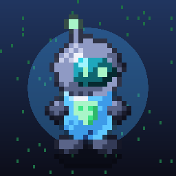

Privacy Policy
Bahasa Indonesia
sudo survive ("Game") dibuat oleh NightFall Studio. Kebijakan ini menjelaskan data apa yang terlibat saat kamu bermain.
1. Data yang kami simpan. Progres game (mata uang dalam game, upgrade, pengaturan, statistik permainan, log playtest) disimpan hanya di perangkatmu. Kami tidak memiliki server dan tidak mengumpulkan data ini.
2. Pembelian dalam aplikasi. Pembayaran diproses sepenuhnya oleh Apple. Kami tidak menerima nama, email, atau data kartu pembayaranmu; kami hanya menerima konfirmasi bahwa sebuah produk berhasil dibeli.
3. Iklan. Game ini menampilkan iklan rewarded bila kamu memilih untuk menontonnya, dan iklan layar penuh (interstitial) paling banyak sekali tiap 3 menit setelah sebuah run selesai. Untuk mengetahui apakah perangkat sedang online, game mengirim permintaan kosong ke https://www.gstatic.com/generate_204 (Google) tanpa data pribadi apa pun. Iklan disediakan oleh Google AdMob, yang dapat mengumpulkan data perangkat (seperti pengenal perangkat, alamat IP/perkiraan lokasi, dan interaksi dengan iklan) untuk menayangkan dan mengukur iklan. Kami tidak melacakmu lintas aplikasi dan tidak meminta izin App Tracking Transparency. Kebijakan Google: https://policies.google.com/privacy. Pemain di wilayah EEA/Inggris akan diminta persetujuan sebelum iklan dipersonalisasi.
4. Game Center. Bila kamu masuk Game Center, Apple memproses achievement dan skor leaderboard sesuai kebijakan privasi Apple.
5. Masukan. Bila kamu mengirim masukan lewat email, kami menerima alamat email dan isi pesanmu (termasuk ringkasan log permainan yang kamu lampirkan) hanya untuk memperbaiki game.
6. Anak-anak. Game ini tidak ditujukan khusus untuk anak di bawah 13 tahun dan tidak dengan sengaja mengumpulkan data pribadi anak.
7. Menghapus data. Menghapus aplikasi akan menghapus semua data game di perangkatmu.
8. Kontak. mrnightfall24@gmail.com
English
sudo survive (the "Game") is made by NightFall Studio.
1. Data we store. Game progress (in-game currency, upgrades, settings, gameplay stats, playtest log) is stored only on your device. We run no servers and collect none of it.
2. In-app purchases are processed entirely by Apple. We never receive your name, email or payment details — only a confirmation that a product was purchased.
3. Ads. The Game shows rewarded ads when you choose to watch one, and a full-screen (interstitial) ad at most once every 3 minutes after a run ends. To check whether the device is online, the Game sends an empty request to https://www.gstatic.com/generate_204 (Google) containing no personal data. Ads are served by Google AdMob, which may collect device data (such as device identifiers, IP address/approximate location and ad interactions) to deliver and measure ads. We do not track you across apps and do not request App Tracking Transparency. Google's policy: https://policies.google.com/privacy. Players in the EEA/UK are asked for consent before personalized ads.
4. Game Center. If you sign in to Game Center, Apple processes achievements and leaderboard scores under Apple's privacy policy.
5. Feedback. If you email us, we receive your email address and message (including any gameplay log summary you attach) solely to improve the Game.
6. Children. The Game is not directed at children under 13 and does not knowingly collect children's personal data.
7. Deleting data. Uninstalling the app deletes all game data on your device.
8. Contact. mrnightfall24@gmail.com